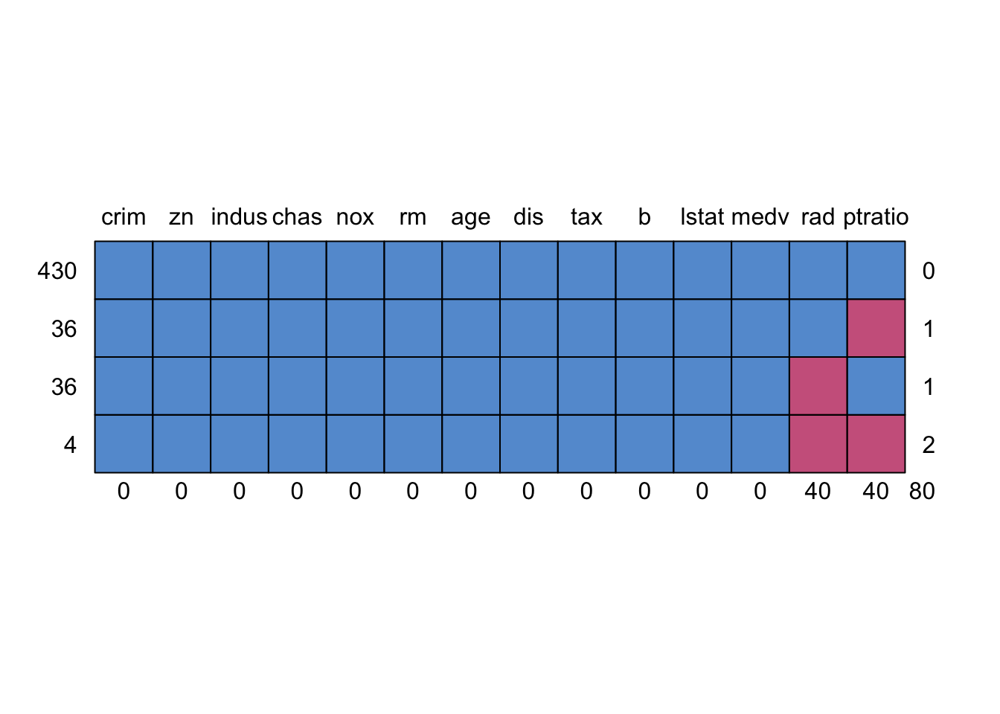
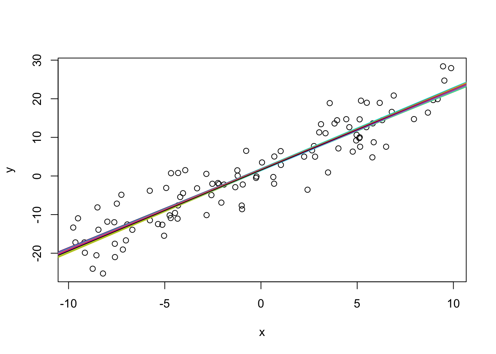
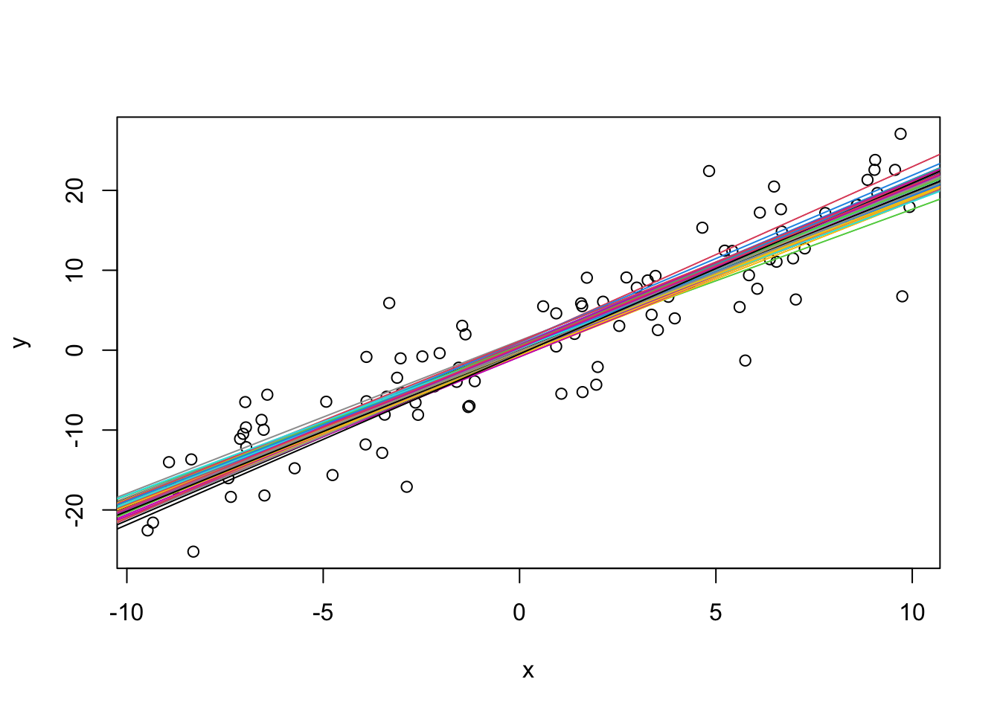
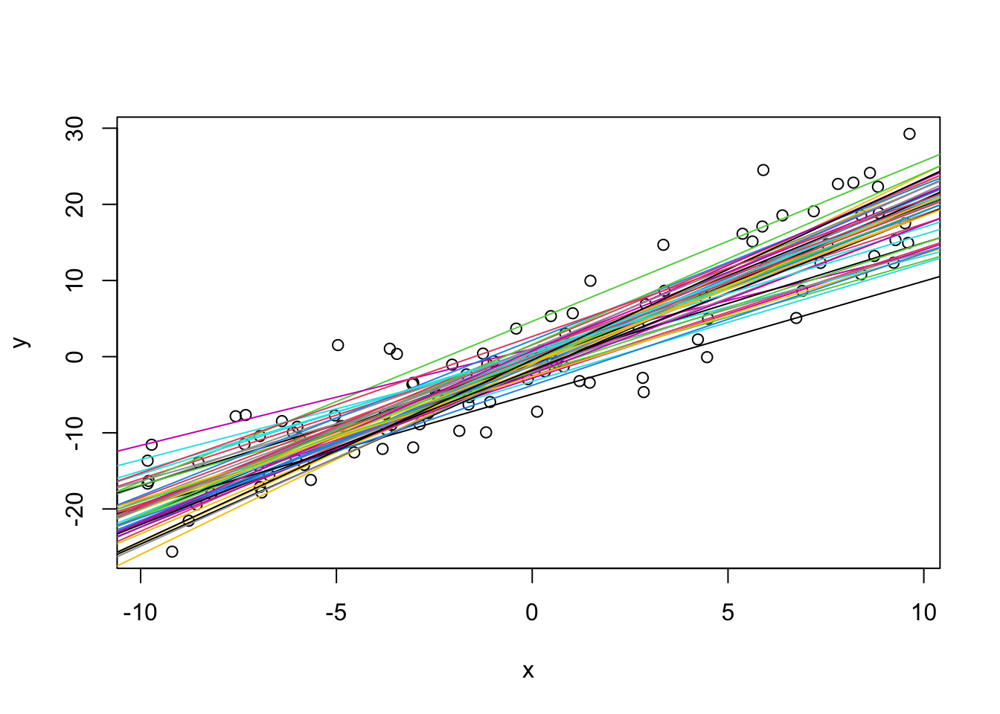
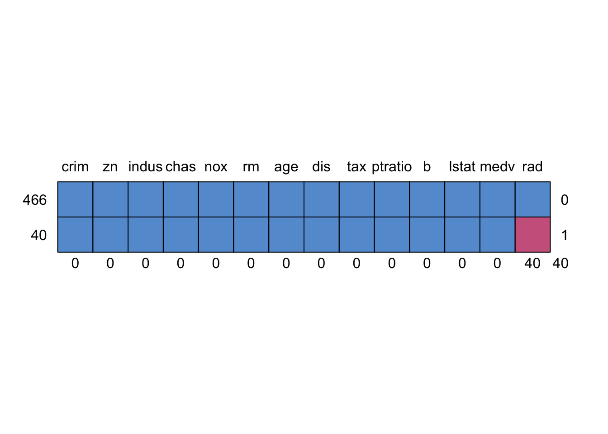

10 Multilevel Modelling Practical 9 (Week 10)
10.1 Dealing with missing values
Missing values in data are a common phenomenon in real world problems. Knowing how to handle missing values effectively is a required step to reduce bias and to produce powerful models. In this final workshop, we will explore different methods of handling missing data.
\(~\)
10.1.0.1 Data preparation and pattern
We will use the Boston Housing dataset in the mlbench package to discuss the various approaches to treating missing values. Though the original Boston Housing data doesn’t have missing values, we will randomly introduce missing values. This way, we can validate the imputed missing values against the actual observations, so that we know how effective are the approaches in reproducing the actual data. Lets begin by importing the data from the mlbench package and randomly insert missing values (NA).
require(mlbench)
data ("BostonHousing", package="mlbench")
# initialize the data # load the data
original <- BostonHousing
# backup original data
# Introduce missing values
set.seed(100)
BostonHousing[sample(1:nrow(BostonHousing), 40), "rad"] <- NA
BostonHousing[sample(1:nrow(BostonHousing), 40), "ptratio"] <- NA
head(BostonHousing)## crim zn indus chas nox rm age dis rad tax ptratio b lstat medv
## 1 0.00632 18 2.31 0 0.538 6.575 65.2 4.0900 1 296 15.3 396.90 4.98 24.0
## 2 0.02731 0 7.07 0 0.469 6.421 78.9 4.9671 2 242 17.8 396.90 9.14 21.6
## 3 0.02729 0 7.07 0 0.469 7.185 61.1 4.9671 2 242 17.8 392.83 4.03 34.7
## 4 0.03237 0 2.18 0 0.458 6.998 45.8 6.0622 NA 222 18.7 394.63 2.94 33.4
## 5 0.06905 0 2.18 0 0.458 7.147 54.2 6.0622 3 222 18.7 396.90 5.33 36.2
## 6 0.02985 0 2.18 0 0.458 6.430 58.7 6.0622 3 222 18.7 394.12 5.21 28.7The missing values have been inserted in the rad (index of accessibility to radial highways) and ptratio (pupil-teacher ratio by town). Though we know where the missing values are, let’s quickly check the ‘missings’ pattern using md.pattern (a function in mice package).

## crim zn indus chas nox rm age dis tax b lstat medv rad ptratio
## 430 1 1 1 1 1 1 1 1 1 1 1 1 1 1 0
## 36 1 1 1 1 1 1 1 1 1 1 1 1 1 0 1
## 36 1 1 1 1 1 1 1 1 1 1 1 1 0 1 1
## 4 1 1 1 1 1 1 1 1 1 1 1 1 0 0 2
## 0 0 0 0 0 0 0 0 0 0 0 0 40 40 80We see that 36 rows in the data set have a missing value on just ptratio, 36 have a missing value on just rad and 4 rows have both rad and ptratio as missing.
\(~\)
10.1.0.2 Method 1. Deleting the observations
If you have large number of observations in your data set, where all the cases to be predicted are sufficiently well represented in the data, then try deleting (or not to include missing values while model building, for example by setting na.action=na.omit) those observations (rows) that contain missing values. Let’s regress medv on ptratio and rad after deleting the missingness (that is, deleting the rows for which there is at least one missing value), and compare against a model fit that uses the original data set:
# Example - regress medv (value of homes) on ptratio and rad
model1 <- lm(medv ~ ptratio + rad, data=BostonHousing, na.action=na.omit) #though na.omit is the default in lm()
summary(model1)##
## Call:
## lm(formula = medv ~ ptratio + rad, data = BostonHousing, na.action = na.omit)
##
## Residuals:
## Min 1Q Median 3Q Max
## -18.225 -4.355 -0.964 2.967 33.566
##
## Coefficients:
## Estimate Std. Error t value Pr(>|t|)
## (Intercept) 57.04649 3.31434 17.212 < 2e-16 ***
## ptratio -1.76906 0.18788 -9.416 < 2e-16 ***
## rad -0.20322 0.04862 -4.180 3.54e-05 ***
## ---
## Signif. codes: 0 '***' 0.001 '**' 0.01 '*' 0.05 '.' 0.1 ' ' 1
##
## Residual standard error: 7.659 on 427 degrees of freedom
## (76 observations deleted due to missingness)
## Multiple R-squared: 0.2894, Adjusted R-squared: 0.2861
## F-statistic: 86.94 on 2 and 427 DF, p-value: < 2.2e-16##
## Call:
## lm(formula = medv ~ ptratio + rad, data = original)
##
## Residuals:
## Min 1Q Median 3Q Max
## -18.349 -4.567 -1.177 3.001 33.426
##
## Coefficients:
## Estimate Std. Error t value Pr(>|t|)
## (Intercept) 57.44986 3.18089 18.061 < 2e-16 ***
## ptratio -1.79043 0.18090 -9.897 < 2e-16 ***
## rad -0.19621 0.04498 -4.362 1.56e-05 ***
## ---
## Signif. codes: 0 '***' 0.001 '**' 0.01 '*' 0.05 '.' 0.1 ' ' 1
##
## Residual standard error: 7.793 on 503 degrees of freedom
## Multiple R-squared: 0.2849, Adjusted R-squared: 0.2821
## F-statistic: 100.2 on 2 and 503 DF, p-value: < 2.2e-16Compare summaries - we see relatively little difference in output.
\(~\)
Let’s dig a little deeper with a synthetic data experiment. We will simulate data from a simple linear regression model, then repeatedly delete a proportion specified by the user, and compare fitted lines.
set.seed(43515)
sim <-function(prop=0.1,N=50)
{
x <- runif(100,-10,10)
y <- rnorm(100,1+2*x,5)
plot(x,y)
abline(lm(y~x))
for(i in 1:N)
{
indices <- sample(1:100,round(100*prop))
ymis <- y[-indices]
xmis <- x[-indices]
lines(abline(lm(ymis~xmis),col=i))
}
}TASK: Make sure you understand what the above function is doing. Execute the function for different values of prop e.g. 0.1, 0.5, 0.9. Is the behaviour as expected?
Click for solution



Unsurprisingly, the lines become more variable as the proportion of missingness increases. Nevertheless, if we were to look at the average intercept and slope values, we’d find that these would be close to the ground truth values. The missingness mechanism is MCAR so we expect increased variance in the parameter estimates but no increase in bias.\(~\)
10.1.0.3 2. Imputation with mean / median / mode
Replacing the missing values with the mean / median / mode is a crude way of treating missing values. Depending on the context, e.g. if the variation is low or if the variable has low leverage over the response, such a rough approximation is acceptable and could possibly give satisfactory results.
Let’s impute using the mean for the Boston Housing data ptratio variable. The following code chunk demonstrates how this can be done without overwriting the BostonHousing data.
BostonHousing2 <- BostonHousing #Copy the data to avoid an overwrite
BostonHousing2$ptratio[is.na(BostonHousing2$ptratio)] <- mean(BostonHousing2$ptratio, na.rm = TRUE)
md.pattern(BostonHousing2) 
## crim zn indus chas nox rm age dis tax ptratio b lstat medv rad
## 466 1 1 1 1 1 1 1 1 1 1 1 1 1 1 0
## 40 1 1 1 1 1 1 1 1 1 1 1 1 1 0 1
## 0 0 0 0 0 0 0 0 0 0 0 0 0 40 40Compute the accuracy:
actuals <- original$ptratio[is.na(BostonHousing$ptratio)]
predicteds <- rep(mean(BostonHousing$ptratio, na.rm=TRUE), length(actuals))
mae <- mean(abs(actuals - predicteds))
mse <- mean((actuals - predicteds)^2)
rmse <- sqrt(mse)
smape <- mean(2 * abs(actuals - predicteds) / (abs(actuals) + abs(predicteds)) * 100)
list(MAE = mae, MSE = mse, RMSE = rmse, sMAPE = smape)## $MAE
## [1] 1.70029
##
## $MSE
## [1] 3.908088
##
## $RMSE
## [1] 1.976888
##
## $sMAPE
## [1] 9.348085Note the RMSE value. We will use benchmark further methods against this.
\(~\)
10.1.0.5 3.1. kNN Imputation
DMwR::knnImputation uses a k-Nearest neighbours approach to impute missing values. kNN imputation in simpler terms is as follows: for every observation to be imputed, it identifies the ‘k’ closest observations based on euclidean distance and computes the weighted average (weighted based on inverse distance) of these ‘k’ observations.
The advantage is that you can impute all the missing values in all variables with one call to the function. It takes the whole data frame as the argument and you don’t even have to specify which variable you want to impute.
library(DMwR2)
knnOutput <- knnImputation(BostonHousing) #Don't include the response.
anyNA(knnOutput)## [1] FALSECompute the accuracy using just the ptratio variable (to allow comparison with that obtained when using mean imputation).
actuals <- original$ptratio[is.na(BostonHousing$ptratio)]
predicteds <- knnOutput[is.na(BostonHousing$ptratio), "ptratio"]
mse <- mean((actuals - predicteds)^2)
rmse <- sqrt(mse)
rmse## [1] 0.9329963How much has root mean square error (RMSE) improved by?
\(~\)
10.1.0.6 3.2 mice
“mice” is short for “Multivariate Imputation by Chained Equations” and is an R package that provides advanced features for missing value treatment. It uses a slightly uncommon way of implementing the imputation in 2-steps, using mice() to build the model and complete() to generate the completed data. The mice(df) function produces multiple complete copies of the data frame df, each with different imputations of the missing data. The complete() function returns one or several of these data sets, with the default being the first.
Let’s see how to impute ptratio.
miceMod <- mice(BostonHousing, method="norm.predict") # perform mice imputation, based on linear regression.##
## iter imp variable
## 1 1 rad ptratio
## 1 2 rad ptratio
## 1 3 rad ptratio
## 1 4 rad ptratio
## 1 5 rad ptratio
## 2 1 rad ptratio
## 2 2 rad ptratio
## 2 3 rad ptratio
## 2 4 rad ptratio
## 2 5 rad ptratio
## 3 1 rad ptratio
## 3 2 rad ptratio
## 3 3 rad ptratio
## 3 4 rad ptratio
## 3 5 rad ptratio
## 4 1 rad ptratio
## 4 2 rad ptratio
## 4 3 rad ptratio
## 4 4 rad ptratio
## 4 5 rad ptratio
## 5 1 rad ptratio
## 5 2 rad ptratio
## 5 3 rad ptratio
## 5 4 rad ptratio
## 5 5 rad ptratio## [1] FALSEThe norm.predict argument uses predicted values from linear regression to impute the missingness. Have a look at the help file for mice to see what other methods are possible. For those that did the Machine Learning module, several will be familiar!
Compute the accuracy of ptratio:
actuals <- original$ptratio[is.na(BostonHousing$ptratio)]
predicteds <- miceOutput[is.na(BostonHousing$ptratio), "ptratio"]
mse <- mean((actuals - predicteds)^2)
rmse <- sqrt(mse)
rmse## [1] 1.488587We seem to be doing worse (or at least no better?) than the knn approach (but we’re not really harnessing the full power of the mice package).
An additional benefit of mice is that it can also handle factors.
The rad variable takes values from \(\{1,2,\ldots,24\}\). There may be good reasons for treating it as continuous, but for the purposes of demonstration, let’s treat it as discrete.
miceMod <- mice(BostonHousing, method="cart") #perform mice imputation, based on classification and regression trees (CART).##
## iter imp variable
## 1 1 rad ptratio
## 1 2 rad ptratio
## 1 3 rad ptratio
## 1 4 rad ptratio
## 1 5 rad ptratio
## 2 1 rad ptratio
## 2 2 rad ptratio
## 2 3 rad ptratio
## 2 4 rad ptratio
## 2 5 rad ptratio
## 3 1 rad ptratio
## 3 2 rad ptratio
## 3 3 rad ptratio
## 3 4 rad ptratio
## 3 5 rad ptratio
## 4 1 rad ptratio
## 4 2 rad ptratio
## 4 3 rad ptratio
## 4 4 rad ptratio
## 4 5 rad ptratio
## 5 1 rad ptratio
## 5 2 rad ptratio
## 5 3 rad ptratio
## 5 4 rad ptratio
## 5 5 rad ptratio## [1] FALSENow compute the accuracy of rad:
actuals <- original$rad[is.na(BostonHousing$rad)]
predicteds <- miceOutput[is.na(BostonHousing$rad), "rad"]
mean(actuals != predicteds) # compute misclass error.## [1] 0.175Note that classification and regression trees (the imputation method used above) is beyond the scope of the course (although several of you will know this from the Machine Learning module).
Let’s complete the multiple imputation workflow. We use the with function to fit the regression model to each of the 5 imputed data sets:
## # A tibble: 15 × 7
## term estimate std.error statistic p.value nobs df.residual
## <chr> <dbl> <dbl> <dbl> <dbl> <int> <dbl>
## 1 (Intercept) 56.6 3.15 18.0 4.78e-56 506 503
## 2 ptratio -1.74 0.179 -9.71 1.53e-20 506 503
## 3 rad -0.203 0.0449 -4.52 7.70e- 6 506 503
## 4 (Intercept) 56.9 3.18 17.9 1.04e-55 506 503
## 5 ptratio -1.75 0.181 -9.72 1.45e-20 506 503
## 6 rad -0.206 0.0451 -4.57 6.21e- 6 506 503
## 7 (Intercept) 56.7 3.16 17.9 5.46e-56 506 503
## 8 ptratio -1.74 0.179 -9.72 1.36e-20 506 503
## 9 rad -0.203 0.0450 -4.51 8.07e- 6 506 503
## 10 (Intercept) 56.6 3.16 17.9 9.37e-56 506 503
## 11 ptratio -1.74 0.180 -9.68 2.02e-20 506 503
## 12 rad -0.204 0.0451 -4.52 7.84e- 6 506 503
## 13 (Intercept) 56.5 3.15 17.9 6.15e-56 506 503
## 14 ptratio -1.73 0.179 -9.68 1.96e-20 506 503
## 15 rad -0.209 0.0450 -4.63 4.65e- 6 506 503Finally, use the pool function to pool results:
## term estimate std.error statistic df p.value
## 1 (Intercept) 56.6434253 3.16571683 17.892764 499.1928 1.103289e-55
## 2 ptratio -1.7415941 0.17975027 -9.688965 499.4531 1.855954e-20
## 3 rad -0.2049607 0.04512901 -4.541661 498.7355 7.006823e-06If you wish, you can compare the results to those obtained using the orginal data set.
\(~\)
10.1.0.7 References
Rubin, D. B. Multiple imputation for nonresponse in surveys. John Wiley & Sons, 1987.
Schafer, J.L. (1997). Analysis of Incomplete Multivariate Data. London: Chapman & Hall. Table 6.14.
Van Buuren, S. and Groothuis-Oudshoorn, K. (2011). mice: Multivariate Imputation by Chained Equations in R. Journal of Statistical Software, 45(3), 1-67. pdf